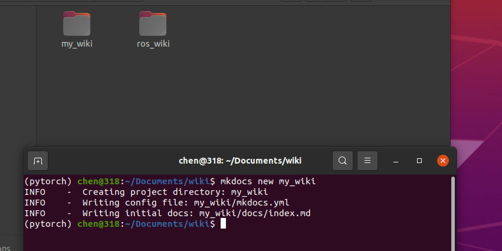
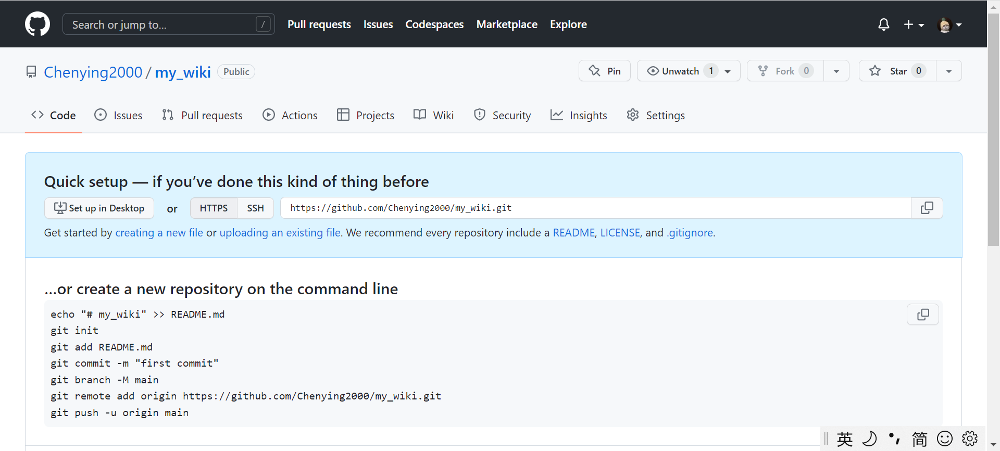
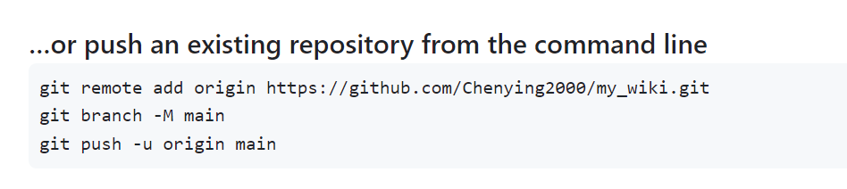
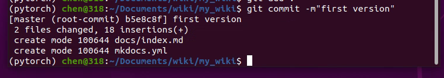
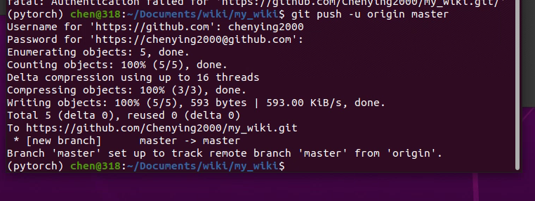
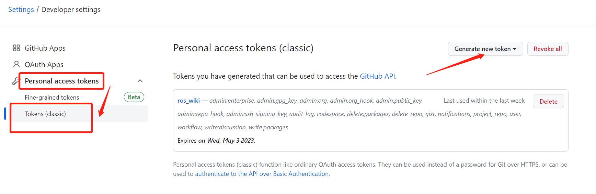

创建Wiki网站并将站点托管到Github
使用工具：mkdocs和git命令
1、mkdocs简介
MkDocs是一个快速、简单、完全华丽的静态站点生成器，用于构建项目文档。文档源文件基于python，以 Markdown 格式编写，并使用单个 YAML 配置文件进行配置，可以将生成的网站部署到任何地方。
2、mkdocs安装
linux系统采用命令行安装：
sudo apt-get install mkdocs
由于mkdocs基于python，windows用户需要先确保自己有python环境和pip工具，如果没有自行到官网下载。
windows用户同样到cmd终端通过运行以下命令安装：
pip install mkdocs
3、mkdocs版本检查
mkdocs --version
正常情况下，如果正确安装就可以看到mkdocs的版本信息

4、创建wiki
（1）新建项目：
进入合适的文档位置，开始创建你的wiki
mkdocs new my_wiki
其中my_wiki是项目名称，可以自行拟定
进入新创建的项目
cd my_wiki
项目创建成功后可以看到：

多了新的文件夹my_wiki，且文件夹里自动生成了文件夹docs用于存放md文件，这里已经生成了示例文件index.md。另外my_wiki文件夹里还有用于渲染网页的配置文件mkdocs.yaml
（2）预览wiki
在这儿其实我们就已经可以预览wiki页面啦，进入我们刚才创建的文件夹里，在终端输入命令：
cd my_wiki
mkdocs serve
之后终端中会出现如下提示：

复制提示的网址信息http://127.0.0.1:8000，粘贴到浏览器访问即可看到预览信息

在终端中退出预览，可以开始编辑我们的个性化网站
ctrl+c
（3）个性化修改编辑
编辑网站可以选择在原始的index.md按照markdown语法进行修改，也可以将自己已经编写好的md文档复制到该路径。当有多个md文件共存时，会在左上角并列显示，可以选择。

（4）插入图片
如需插入图片，可以在docs文件夹下新建一个imags（名字可自定义）文件夹，在需要插入图片的位置按照markdown语法引用该图片的相对路径即可

插入图片时一定要注意相对路径的书写语法，尤其是如果你是从已经写好的文件复制过来的，那么极有可能是会出现问题，显示不正常的，这里可能只显示一个小圆圈或者小方块。这大概率是相对路径书写错误。
- 相对路径书写为绝对路径会导致找不到图片
- 相对路径的斜杠和反斜杠书写错误，windows下是以斜杠方式查找路径而linux下是反斜杠，所以复制过来，系统不一样的要注意检查啦

上图就是不注意相对路径的书写方式（斜杠/和反斜杠\用错）导致找不到图片报错。
编辑完成之后就可以按照（2）预览wiki提供的方式进行界面预览啦。这样我们的wiki网站就在本地完成搭建啦
（5）美化界面
有些小伙伴可能会觉得这个界面不够美观，这里mkdocs也提供了大量的模板素材可以供大家选择，大家可以自行查阅选择，这里给大家推荐使用material主题美化。
material是一个mkdocs主题，它的优点：
-
谷歌的material设计风格。
-
渐进式布局，可以适配各种设备访问。
-
支持非常多的插件和扩展。
使用方法如下：
①安装
pip install mkdocs-material
②配置：打开配置文件mkdocs.yaml，加入如下内容
theme:
name: 'material'
③个性化设置：如果想进行网页左上角logo修改，颜色修改等可加入如下内容
theme:
name: "material"
logo:
icon: "mkwiki"
palette:
primary: "black"
accent: "white"
language: "zh"
其中logo是设置左上角的显示，可以是文字、图片等，palette是设置主题颜色，常见的颜色都可以选择，language就是设置语言啦，这里选用中文
5、将本地wiki网站托管到github
（1）创建一个新的仓库：
示例： https://github.com/user_name/repository_name

可以看到后面已经提示了我们如果需要远程push一个仓库到这里需要怎么做

（2）初始化本地仓库
进入项目文件夹，初始化本地仓库
cd my_wiki
git init

可以看到这里会创建一个.git的文件夹，这里在my_wiki中看不到，如果想要看到需要选中显示隐藏文件夹
（3）添加本地的文件到本地仓库
git add .
这里的.表示所有文件都加进去，这里正常是没有输出反馈的，只要不报错一般就是没问题已经添加成功
（4）提交仓库信息
将本地修改保存到本地仓库中
git commit -m"first version"

（5）推送到远程仓库
这里用到最初新建仓库时的提示信息，如果已经添加了readme文件不显示提示信息了也没有关系，仿造下面的地址修改为自己的仓库地址即可
git remote add origin https://github.com/Chenying2000/my_wiki.git
git push -u origin main
注意这里也有可能是master，如果报错可以尝试修改为master再次运行

由于github都是实名制维护，所以这里如果你是第一次进行仓库维护提交，在提交时他会报错问你的名字邮箱，如实填写即可。
报错信息：
*** Please tell me who you are.
Run
git config --global user.email "you@example.com"
git config --global user.name "Your Name" to set your account's default identity.
Omit --global to set the identity only in this repository. fatal:
unable to auto-detect email address (got 'Zero@zero.(none)')
处理方式：
git config --global user.email "gitHub邮箱"
git config --global user.name "gitHub用户名"
这里我不是第一次提交，所以并没有报错，如果你报错了按照上面的方式处理即可。
接下来正常push，它会问你的github账号密码。但是这里账号密码的方式在2021年已经废弃了，如果你依然输入账号密码它会报错"support for password authentication was removed on August 13,2021"，让你通过token方式进行身份验证。

此时将密码换成个人token粘贴进去，即可成功托管到github。

没有token的小伙伴不要担心，后面会补充获取个人github的token方法。
（6）补充github的token验证方法

进去之后拉到最下面


接下来填入基本信息后按需选择赋予该令牌的权限，需要注意的是，如果要远程push仓库进去，至少要勾选第一个选项，不然后面会没有权限。

设置完之后会出现token，请务必复制粘贴备份！！这个以后你将无法查看第二次。
到这里我们的个人令牌token就设置好了，接下来在push仓库时，照常输入用户名，但是密码要用token代替。
（7）渲染个人网页
目前在github中它是以代码的形式存放的，那么怎么将网站部署到github上可以通过网址访问呢？接下来会用到mkdocs的一个部署工具。
回到终端，进入自己的wiki项目（my_wiki），输入命令：
mkdocs gh-deploy
即可一键部署，这里会再次要求输入github 的账号密码，还按照上面操作即可，将密码换成个人token，这里最终会生成一个网址，这个网址就是我们网页的访问地址啦（组成是github个人账号网址加仓库名）

这里可能需要等上几分钟，一开始会出现404 not found，这个是正常现象，因为部署需要一定时间，稍等片刻再访问就好啦~部署结果预览如下图所示